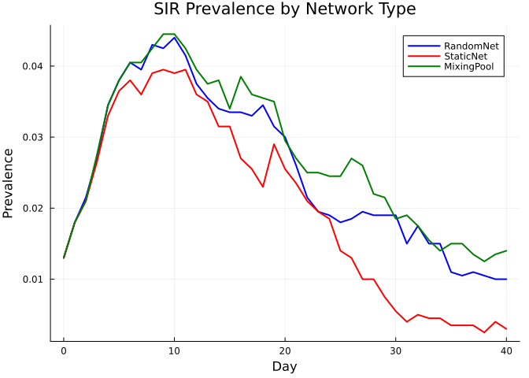
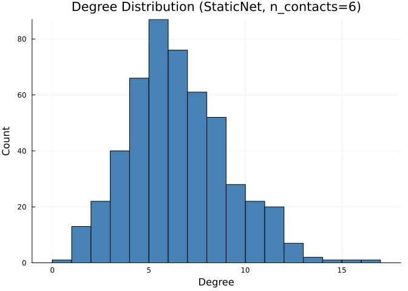
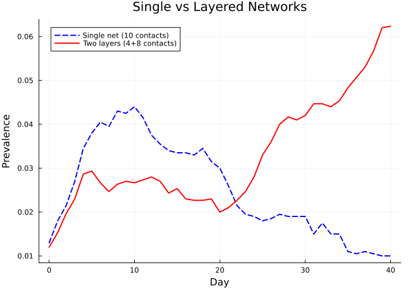
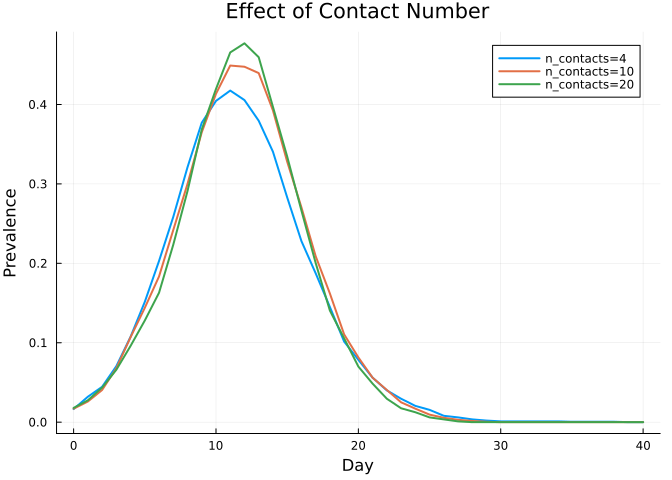

Contact Networks
Simon Frost
- Overview
- Network types at a glance
- RandomNet
- StaticNet
- MFNet: male–female partnerships
- MixingPool: frequency-dependent mixing
- Comparing network types
- Network analysis with Graphs.jl
- Multiple networks
- Effect of contact number
- Summary
Overview
Contact networks determine who can infect whom in a Starsim simulation. This vignette explores the built-in network types, shows how to analyze network structure using Graphs.jl, and demonstrates how network choice affects epidemic dynamics.
Network types at a glance
| Type | Description | Rewires each step? |
|---|---|---|
RandomNet | Erdős–Rényi-like random contacts | Yes |
StaticNet | Fixed contacts for the entire simulation | No |
MFNet | Male–female sexual partnerships | Yes |
MSMNet | Men-who-have-sex-with-men partnerships | Yes |
MaternalNet | Mother–child contacts | No |
MixingPool | Frequency-dependent (mass action) mixing | Yes |
RandomNet
The most common network. Each agent forms approximately n_contacts contacts per timestep, drawn fresh each day.
using Starsim
using Plots
n_contacts = 10
beta = 0.5 / (2 * n_contacts)
sim_random = Sim(
n_agents = 2_000,
networks = RandomNet(n_contacts=n_contacts),
diseases = SIR(beta=beta, dur_inf=4.0, init_prev=0.01),
dt = 1.0,
stop = 40.0,
rand_seed = 42,
verbose = 0,
)
run!(sim_random)
prev_random = get_result(sim_random, :sir, :prevalence)
println("RandomNet peak prevalence: $(round(maximum(prev_random), digits=4))")RandomNet peak prevalence: 0.044StaticNet
Contacts are assigned once and remain fixed. This mimics household or long-term contacts.
n_contacts_static = 10
beta_static = 0.5 / (2 * n_contacts_static)
sim_static = Sim(
n_agents = 2_000,
networks = StaticNet(n_contacts=n_contacts_static),
diseases = SIR(beta=beta_static, dur_inf=4.0, init_prev=0.01),
dt = 1.0,
stop = 40.0,
rand_seed = 42,
verbose = 0,
)
run!(sim_static)
prev_static = get_result(sim_static, :sir, :prevalence)
println("StaticNet peak prevalence: $(round(maximum(prev_static), digits=4))")StaticNet peak prevalence: 0.0395MFNet: male–female partnerships
MFNet creates heterosexual partnerships with configurable mean duration and participation rate.
sim_mf = Sim(
n_agents = 2_000,
networks = MFNet(mean_dur=200.0, participation_rate=0.8),
diseases = SIR(beta=0.3, dur_inf=20.0, init_prev=0.05),
dt = 1.0,
stop = 200.0,
rand_seed = 42,
verbose = 0,
)
run!(sim_mf)
prev_mf = get_result(sim_mf, :sir, :prevalence)
println("MFNet peak prevalence: $(round(maximum(prev_mf), digits=4))")MFNet peak prevalence: 0.879MixingPool: frequency-dependent mixing
MixingPool uses mass-action-style contact where everyone can potentially contact everyone. The contact_rate scales the effective number of contacts.
n_contacts_pool = 10
beta_pool = 0.5 / (2 * n_contacts_pool)
sim_pool = Sim(
n_agents = 2_000,
networks = MixingPool(contact_rate=n_contacts_pool),
diseases = SIR(beta=beta_pool, dur_inf=4.0, init_prev=0.01),
dt = 1.0,
stop = 40.0,
rand_seed = 42,
verbose = 0,
)
run!(sim_pool)
prev_pool = get_result(sim_pool, :sir, :prevalence)
println("MixingPool peak prevalence: $(round(maximum(prev_pool), digits=4))")MixingPool peak prevalence: 0.0445Comparing network types
tvec_r = 0:length(prev_random)-1
tvec_s = 0:length(prev_static)-1
tvec_p = 0:length(prev_pool)-1
plot(tvec_r, prev_random, label="RandomNet", lw=2, color=:blue)
plot!(tvec_s, prev_static, label="StaticNet", lw=2, color=:red)
plot!(tvec_p, prev_pool, label="MixingPool", lw=2, color=:green)
xlabel!("Day")
ylabel!("Prevalence")
title!("SIR Prevalence by Network Type")
Network analysis with Graphs.jl
Starsim.jl provides to_graph and to_adjacency_matrix for analyzing network structure.
using Graphs
# Initialize a simulation to generate a network snapshot
n_contacts_graph = 6
beta_graph = 0.5 / (2 * n_contacts_graph)
sim_graph = Sim(
n_agents = 500,
networks = StaticNet(n_contacts=n_contacts_graph),
diseases = SIR(beta=beta_graph, dur_inf=4.0, init_prev=0.01),
dt = 1.0,
stop = 10.0,
rand_seed = 42,
verbose = 0,
)
init!(sim_graph)
# Extract graph from the static network's edges
net = first(values(sim_graph.networks))
edges_snap = network_edges(net)
g = to_graph(edges_snap)
println("Nodes: $(nv(g))")
println("Edges: $(ne(g))")
println("Mean degree: $(round(2 * ne(g) / nv(g), digits=2))")Nodes: 500
Edges: 1511
Mean degree: 6.04Degree distribution
degs = degree(g)
histogram(degs, bins=0:maximum(degs)+1,
xlabel="Degree", ylabel="Count",
title="Degree Distribution (StaticNet, n_contacts=6)",
label=nothing, color=:steelblue)
Connected components
cc = connected_components(g)
println("Number of connected components: $(length(cc))")
println("Largest component size: $(maximum(length.(cc)))")Number of connected components: 2
Largest component size: 499Multiple networks
Combine networks to represent different contact layers (e.g., household + workplace).
n_contacts_hh = 4
n_contacts_work = 8
beta_layers = 0.5 / (2 * (n_contacts_hh + n_contacts_work))
sim_layers = Sim(
n_agents = 3_000,
networks = [
RandomNet(name=:household, n_contacts=n_contacts_hh),
RandomNet(name=:workplace, n_contacts=n_contacts_work),
],
diseases = SIR(beta=beta_layers, dur_inf=4.0, init_prev=0.01),
dt = 1.0,
stop = 40.0,
rand_seed = 42,
verbose = 0,
)
run!(sim_layers)
prev_layers = get_result(sim_layers, :sir, :prevalence)
tvec_l = 0:length(prev_layers)-1
plot(tvec_r, prev_random, label="Single net (10 contacts)", lw=2, color=:blue, ls=:dash)
plot!(tvec_l, prev_layers, label="Two layers (4+8 contacts)", lw=2, color=:red)
xlabel!("Day")
ylabel!("Prevalence")
title!("Single vs Layered Networks")
Effect of contact number
contacts = [4, 10, 20]
p = plot(xlabel="Day", ylabel="Prevalence", title="Effect of Contact Number")
for nc in contacts
beta_nc = 0.5 / nc
sim = Sim(
n_agents=2_000, networks=RandomNet(n_contacts=nc),
diseases=SIR(beta=beta_nc, dur_inf=4.0, init_prev=0.01),
dt=1.0, stop=40.0, rand_seed=42, verbose=0,
)
run!(sim)
prev = get_result(sim, :sir, :prevalence)
plot!(p, 0:length(prev)-1, prev, label="n_contacts=$nc", lw=2)
end
p
Summary
- RandomNet: Daily re-drawn contacts; most general-purpose choice
- StaticNet: Fixed contacts; useful for households and stable relationships
- MFNet / MSMNet: Partnership-based sexual networks
- MixingPool: Mass-action mixing; best for well-mixed populations
- Use
to_graph()and Graphs.jl for network analysis (degree, components, etc.) - Multiple networks can be layered for realistic contact structure